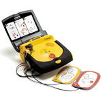

Welkom op de site van Stichting AED-netwerk Gemeente Duiven. Deze stichting is opgericht door initiatief van leden van MKB Duiven.
De stichting heeft als doel om:
Een Automatische Externe Defibrillator is een draagbaar toestel dat wordt gebruikt bij een persoon met een plotselinge hartstilstand. Deze AED onderzoekt zelf de patiënt en brengt zonodig een elektrische schok toe, met als doel het hart weer in een normaal ritme te brengen.
Voor een uitgebreide omschrijving zie:
hoe-ziet-dit-in-de-praktijk-uit.html
Voldoende AED-toestellen, gelijkmatig verspreid in de wijken en dag en nacht bereikbaar. Voor een goed netwerk denken we 25 AED-toestellen nodig te hebben.
Voldoende vrijwillige hulpverleners, ongeveer 500 in de gemeente. De hulpverleners worden door erkende opleidingscentra opgeleid.
Alle toestellen en opgeleide hulpverleners die willen deelnemen worden aangemeld bij HartslagNu.nl.
Het onderhouden van kennis van burgerhulpverleners door opleiding en het zorgdragen voor onderhouden van de AED’s.
U kunt zich eenvoudig via deze website aanmelden als vrijwillige hulpverlener of sponsor. U wordt opgeleid door opleidingscentra tegen een gereduceerd tarief. Daarnaast kunt u ons helpen met een vrijwillige bijdrage. Er is veel geld nodig. Dus wilt u of wil uw bedrijf, organisatie, vereniging, school, bedrijfskantine ons ook hierbij steunen dan is uw bijdrage meer dan van harte welkom.
Aangezien we bij de Belastingdienst geregistreerd staan als ANBI (Algemeen nut beogende instellingen), mag u giften onder bepaalde voorwaarden aftrekken in uw aangifte inkomsten- of vennootschapsbelasting. Daarnaast geldt voor ANBI’s dat er geen schenk- en erfbelasting betaald hoeft te worden. Meer informatie hierover is te vinden op de website van de Belastingdienst.
Film gemaakt door Bas van Spankeren in opdracht van de Rabobank, in het kader van het Rabobank Stimuleringsfonds De Liemers 2013.
Hieronder een actueel overzicht van AED's die beschikbaar worden gesteld.